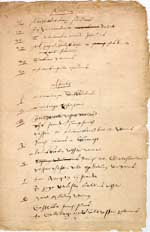
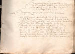
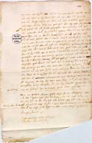
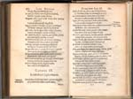
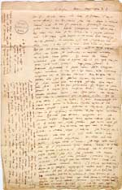

Justus Lipsius 1606 – 2006
Samenstelling: Jeanine de Landtsheer en A.Th. Bouwman
De webpresentatie behandelt de volgende onderwerpen:
9. Vertrek uit Leiden
Na dertien jaar zijn beste krachten aan de Leidse universiteit te hebben gegeven als hoogleraar, waarvan vier bovendien als rector, kon Lipsius zich steeds moeilijker vinden in het geestelijk klimaat in Holland en Leiden. De successen van Farnese in het Zuiden leidden tot een instroom van overtuigde calvinisten voor wie de strijd in de Nederlanden in de eerste plaats een godsdienstige was. Hun rechtzinnigheid en de daaruit voortvloeiende conflicten irriteerden Lipsius in toenemende mate. Tweemaal ging hij om gezondheidsredenen met ziekteverlof om te kuren. De eerste keer keerde hij noodgedwongen terug, de tweede keer betekende een definitief afscheid. Toen hij vanuit het neutrale prinsbisdom Luik zijn Leidse vrienden confronteerde met zijn besluit, beseften zij dat zijn vertrek onherroepelijk was. Zij verleenden hem – zwaar teleurgesteld – eervol ontslag en erkenden de onvergelijkelijke verdiensten die hij voor Leiden had gehad. Hoewel gegrondvest in een streven naar geestelijke vrijheid beleefde de hogeschool om zo te zeggen haar omslag van een humanistische naar een calvinistische universiteit. Tegelijkertijd moet Lipsius zelf geweten hebben dat hij met zijn Politica de godsdienstig pluriforme praktijk in het Noorden zou ondermijnen.
|
9.1 || Adam van Leemput, ‘Itinerarii Amstelodamo Leodiam [sic]
fragmentum’, 1591. Manuscript. [Lips. 56: 5]. –– Los blad met routebeschrijving. Van Leemput vergezelde Lipsius tijdens diens tocht naar het Zuiden, die in 1591 via Amsterdam, Hamburg, Kassel, Giessen, Koblenz, Keulen, nogmaals Koblenz, Trier, Arlon, Bastogne en Spa naar Luik voerde. |
|  |
9.2 || J. van Hout, ‘Dachbouck omme daerinne alle lopende zaecken, de Universiteyt beroerende, aen te scryven’. 1580-1590. Manuscript. [AC1 100]. –– Als secretaris stelde Jan van Hout de brief op die curatoren en burgemeesters aan Lipsius zonden, gedateerd 2 juli 1591. Een afschrift hiervan bevindt zich in Van Houts ‘Dachbouck’. |
|  |
|
9.3 || Brief van Elisabeth van Zuylen aan Lipsius, gedateerd 30 juni 1591. Manuscript. [Lips. 4]. –– De echtgenote van Janus Dousa schrijft recht uit het hart aan Lipsius hoe ontdaan ze was bij het vernemen van zijn plotselinge vertrek, dankt hem voor zijn vriendschap en hoopt op een weerzien. |
|  |
9.4 || Dousa, Poemata pleraque selecta. Ed. P. Scriverius. Leiden: Th. Basson, 1609. [692 G 21]. –– Postume uitgave van de poëzie van Janus Dousa, waarin hier getoond een klaagdicht naar aanleiding van Lipsius’ vertrek uit Leiden in 1591 (p. 162-163). |
|  |
|
9.5 || Brief van Lipsius aan Fr. Raphelengius, gedateerd 11 november 1591. Manuscript. [BPL 1886]. –– Franciscus Raphelengius sr. was een van de weinigen in Leiden met wie de correspondentie na Lipsius’ vertrek in 1591 intact bleef. In deze brief drukt Lipsius zijn bekommernis uit om de toekomst van de Officina Plantiniana in Leiden na zijn vertrek. |
|  |
| vorige pagina | volgende pagina |